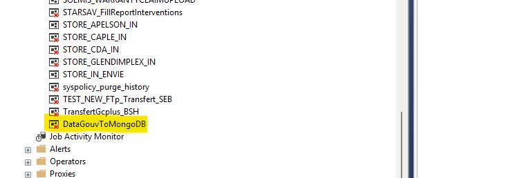

Mise en Contexte
L'entreprise avait besoin d'automatiser la récupération des données d'indice de réparabilité des lave-linges depuis l'API publique DataGouv et de les synchroniser automatiquement dans leur base MongoDB.
Objectif
Développer un exécutable C# autonome qui surveille l'API DataGouv en continu et met à jour la base MongoDB uniquement en cas de nouveaux changements.
Technologies Utilisées
Stack Technique
- C# .NET 8.0 - Application console
- MongoDB Driver - Interaction base de données
- Log4net + ElasticSearch - Logging et monitoring
- API REST DataGouv - Source de données
Solution Développée
Application console avec service de surveillance automatique :
- Polling intelligent : vérification périodique de l'API
- Détection de changements : comparaison par EAN + timestamp
- Upsert MongoDB : insertion/mise à jour automatique
- Validation de données : parsing des scores de réparabilité
Architecture
Structure du Projet
APIAutomatisation/
├── Program.cs # Point d'entrée application
├── Services/
│ └── MongoService.cs # Service principal MongoDB
├── Models/
│ └── DataModel.cs # Modèle de données produit
├── Api/
│ └── ApiClient.cs # Client API DataGouv
└── appsettings.json # Configuration
MongoDB:
└── Database: IndiceReparabilitePP
└── Collection: Product
Points Clés
Caractéristiques Techniques
Performance : évite les mises à jour inutiles via comparaison de dictionnaires
Robustesse : gestion d'erreurs avec continuation du service
Traçabilité : logging détaillé des opérations
Scalabilité : architecture extensible pour autres produits
Processus de Développement et Intégration
Cycle de Révision de Code et Validation
1. Soumission de la Pull Request
Une fois le développement initial terminé, j'ai soumis une Pull Request sur Azure DevOps pour faire réviser mon code par l'équipe senior.
2. Révision de Code et Optimisations
Le responsable technique a effectué une analyse approfondie du code et m'a fourni des observations constructives sur plusieurs aspects :
- Optimisation des performances des requêtes MongoDB
- Amélioration de la gestion des erreurs et de la robustesse
- Standardisation du logging selon les conventions de l'entreprise
- Refactorisation pour une meilleure lisibilité et maintenabilité
Analyse SonarQube - Qualité de Code
Outils d'Analyse Statique
SonarQube est un outil d'analyse statique de code qui détecte automatiquement :
- Bugs potentiels : erreurs de logique, fuites mémoire, exceptions non gérées
- Vulnérabilités de sécurité : injections, authentification faible, données sensibles exposées
- Code smells : code dupliqué, méthodes trop complexes, conventions de nommage
- Couverture de tests : pourcentage de code testé et qualité des tests
Grâce à SonarQube, j'ai pu identifier et corriger plusieurs points d'optimisation dans mon code, améliorant ainsi sa qualité et sa robustesse.
3. Validation Finale et Merge
Après implémentation des optimisations suggérées :
- Nouvelle analyse SonarQube : 0 bug, 0 vulnérabilité, qualité A
- Révision finale du code par le responsable technique
- Validation et merge de la Pull Request dans la branche principale
Déploiement en Production
Le responsable de la base de données a intégré l'exécutable dans l'infrastructure :
Configuration Déploiement
- Job SQL Server : planification automatique de l'exécutable
- Intervalle configuré : surveillance continue 24/7 avec polling toutes les heures
- Monitoring : intégration des logs dans ElasticSearch pour supervision
Retour d'Expérience - Processus DevOps
Ce processus collaboratif m'a permis d'apprendre :
- Standards de qualité : importance de la révision de code par les pairs
- Outils d'analyse : utilisation de SonarQube pour maintenir un code de qualité production
- Workflow Azure DevOps : gestion des branches, Pull Requests et intégration continue
- Déploiement sécurisé : validation multi-niveaux avant mise en production
Validation et Traçabilité du Déploiement
Preuves de Déploiement
Ticket de Mission Azure DevOps
Légende : User Story #40362 validée dans Azure DevOps montrant le statut "Development done" avec intégration réussie dans les builds de développement, preproduction et production.
Exécutable Déployé en Production
Légende : Job SQL Server Agent "DataGouvToMongoDB" configuré et actif sur le serveur de production, assurant l'exécution automatique de la synchronisation des données.
Description détaillée :
- Azure DevOps : La User Story #40362 montre le cycle complet de développement avec validation des builds sur tous les environnements
- SQL Server Agent : L'exécutable est intégré dans l'infrastructure de production avec planification automatique
- Monitoring : Les logs sont automatiquement intégrés dans ElasticSearch pour supervision continue
Résultat
Mission Accomplie
✓ Déployé en production sur serveur
✓ Surveillance automatique 24/7
✓ Synchronisation temps réel avec DataGouv
✓ Zéro intervention manuelle requise
Conclusion
Cette mission m’a permis de mettre en place une solution automatisée qui fonctionne sans intervention humaine. Tout a été validé par l’équipe, et le système répond bien aux besoins : il est fiable, traçable et pourra évoluer facilement si nécessaire.